Intel(R) Software Guard Extensions (Intel(R) SGX) is an Intel technology for application developers seeking to protect select code and data from disclosure or modification. Intel(R) SGX makes such protections possible through the use of enclaves. Enclaves are protected areas of execution. Application code can be put into an enclave through special instructions and software made available to developers by the Intel(R) SGX SDK.
No license (express or implied, by estoppel or otherwise) to any intellectual property rights is granted by this document.
Intel disclaims all express and implied warranties, including without limitation, the implied warranties of merchantability, fitness for a particular purpose, and non-infringement, as well as any warranty arising from course of performance, course of dealing, or usage in trade.
This document contains information on products, services and/or processes in development. All information provided here is subject to change without notice. Contact your Intel representative to obtain the latest forecast, schedule, specifications and roadmaps.
The products and services described may contain defects or errors known as errata which may cause deviations from published specifications. Current characterized errata are available on request.
Intel technologies features and benefits depend on system configuration and may require enabled hardware, software or service activation. Learn more at Intel.com, or from the OEM or retailer.
Copies of documents which have an order number and are referenced in this document may be obtained by calling 1-800-548-4725 or by visiting www.intel.com/design/literature.htm.
Intel, the Intel logo, Xeon, and Xeon Phi are trademarks of Intel Corporation in the U.S. and/or other countries.
|
Optimization Notice |
|---|
|
Intel's compilers may or may not optimize to the same degree for non-Intel microprocessors for optimizations that are not unique to Intel microprocessors. These optimizations include SSE2, SSE3, and SSSE3 instruction sets and other optimizations. Intel does not guarantee the availability, functionality, or effectiveness of any optimization on microprocessors not manufactured by Intel. Microprocessor-dependent optimizations in this product are intended for use with Intel microprocessors. Certain optimizations not specific to Intel microarchitecture are reserved for Intel microprocessors. Please refer to the applicable product User and Reference Guides for more information regarding the specific instruction sets covered by this notice. Notice revision #20110804 |
* Other names and brands may be claimed as the property of others.
© 2016 Intel Corporation.
This Developer Guide is intended for use by Independent Service Vendors who wish to harden their Linux* applications using Intel(R) SGX Technology, code named Intel(R) Software Guard Extensions. The guide describes the procedure for installation of Intel(R) SGX Plugin for Eclipse* IDE and development of Intel(R) SGX components using the plugin. The Intel(R) SGX Plugin for Eclipse leverages on the Intel(R) Software Guard Extensions SDK, which is a collection of APIs, libraries and tools that enable you to develop, build and debug Intel(R) SGX applications in C/C++.
To learn more about the Intel(R) Software Guard Extensions SDK, see the Intel(R) Software Guard Extensions SDK for Linux* OS Developer Reference.
Intel(R) Software Guard Extensions is a new Intel technology, whose objective is to enable a high level of protection of secrets. It operates by allocating hardware-protected memory where code and data reside. The protected memory area within an application process is called an enclave. Data within the enclave memory can only be accessed by code that resides within that enclave. Enclave code can be invoked by special instructions.
An enclave can be built and loaded as a shared object.
Throughout this document, Intel(R) SGX refers to Intel(R) Software Guard Extensions.
An Intel(R) SGX application design is different from the design of non- Intel(R) SGX application as it specifies dividing the application into two logical parts:
The trusted components and untrusted components are developed as separate modules.
The trusted part or the enclave is implemented in C or C++. It is supplied as a collection of functions and data packaged in the form of a dynamically loaded library, a DLL in Windows* OS and a shared object in Linux* OS. It may be supplied either as a pre-built signed library or as a signed shared library built during compilation of the untrusted component.
Enclave functions within an enclave library are wrapped by auto-generated proxy and bridge functions that simplify the mechanism of using the Intel(R) SGX technology by developers.
The role of these functions is to handle the following tasks:
The proxy and bridge functions are generated by the sgx_edger8r tool provided by Intel(R) SGX SDK. It reads an edl file (Enclave Descriptor Language) which describes the functions that form the trusted and untrusted component boundaries within the application.
After the enclave is built, a signed version of it is created using the tool sgx_sign also provided by Intel(R) SGX SDK. It is this signed version may be loaded and executed in the encrypted memory.
Enclaves may have some specific properties which are added as meta-information during the signing process. The meta-information is stored in one configuration xml file per enclave. See more details about meta-information in Intel(R) Software Guard Extensions SDK for Linux* OS Developer Reference.
The Intel(R) Software Guard Extensions Eclipse* Plug-in helps the enclave developer to maintain enclaves and untrusted related code inside Eclipse* C/C++ projects. To use this support, add Intel(R) SGX nature to the C/C++ project. See Adding Intel(R) SGX Nature to a Project for details.
Once the Intel(R) SGX nature is added to a project, you will have access to the Intel(R) SGX commands. Intel(R) SGX nature adds also a folder called sgx to the root of the project, and a Makefile inside it. All resources of the project managed by Intel(R) Software Guard Extensions Eclipse Plug-in are located inside this directory. You can build and run enclaves related code using GNU* Make tool through the Makefile.
The plugin is generating minimal but ready-to-work code skeletons, complete with their own Makefile having all the required make targets as to call sgx_edger8r tool to generate the proxies and bridges, compile these source, generate a shared object and finally, to sign the enclave with the sgx_sign tool. This provide a starting point you may build upon.
This section contains steps to set up your Intel(R) Software Guard Extensions Eclipse* Plug-in on a Linux* system, including necessary softwares, steps to install the product, and steps to configure your preferred product directory.
• Pre-requisites
• Installing Intel(R) Software Guard Extensions Eclipse* Plug-in
• Configuring Intel(R) Software Guard Extensions Eclipse* Plug-in
To use Intel(R) Software Guard Extensions Eclipse Plug-in, install the following softwares:
Install Intel(R) Software Guard Extensions Eclipse* Plug-in as a regular Eclipse Plugin:
Go to Help menu -> Install New Software. Click the Add button for the Work with field to open the Add Repository dialog as shown in the following graphic:
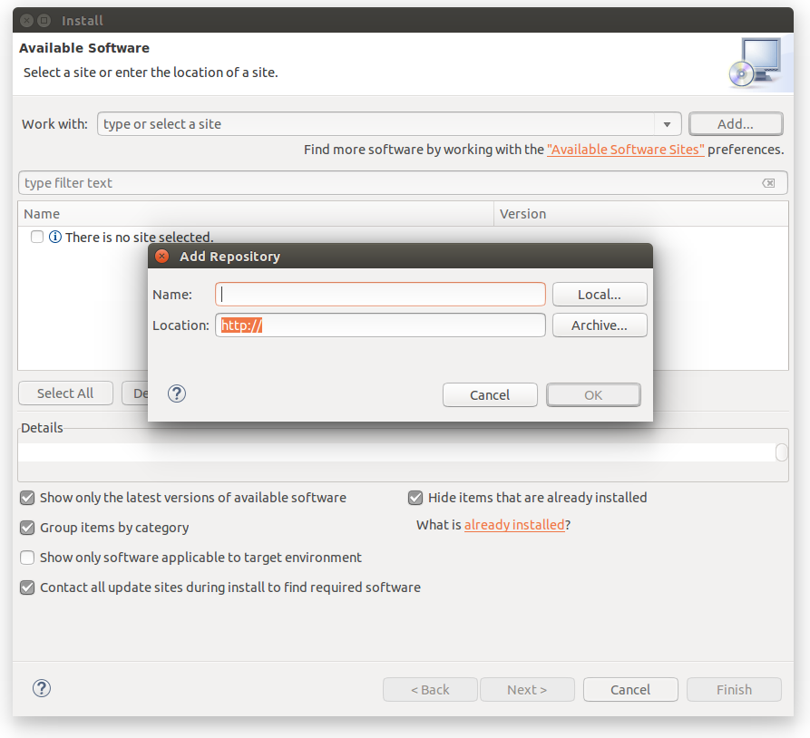
Add Repository Dialog
Enter Intel(R) SGX Archive in the Name field . Click the Archive... button and select the location of the downloaded archive as shown in the following graphic:
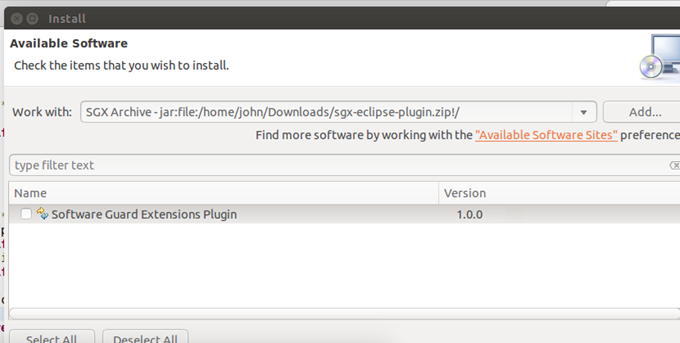
The Location of the Plugin zip Archive
If you do not install Intel(R) SGX SDK for Linux* OS in the default location, you need to specify the path for Intel(R) SGX SDK using the following steps:
Go to Window menu ->Preferences. Enter Intel(R) SGX in the filter text field to quickly locate the Intel(R) SGX Preferences page.
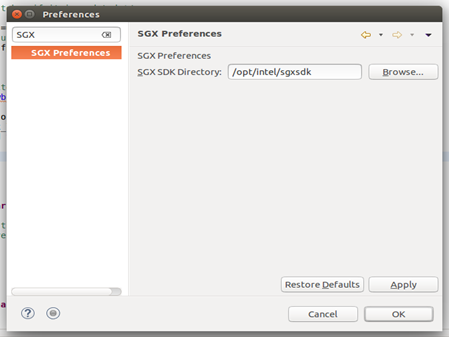
Intel(R) SGX Preference Page
This topic provides the command reference for the following scenarios of using Intel(R) Software Guard Extensions Eclipse* Plug-in:
All commands brought by Intel(R) Software Guard Extensions Eclipse Plug-in are available by right-clicking on the Project root in Project explorer view in menu Intel(R) Software Guard Extensions Tools:
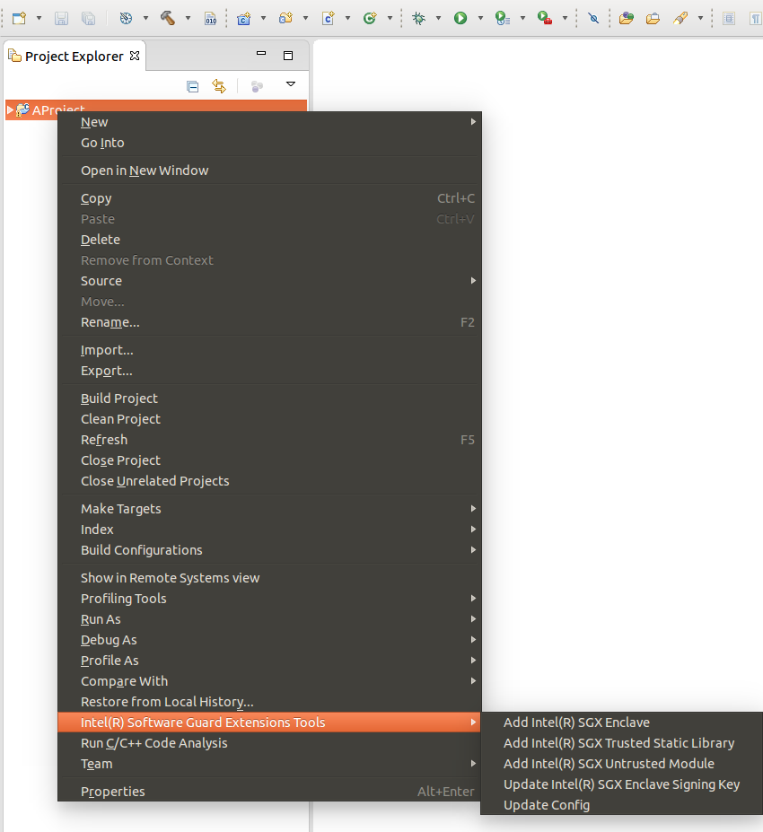
Project Explorer
The nature of an Eclipse project is a concept defined by an Eclipse Platform which allows a plug-in to tag a project as a specific kind of project. Intel(R) Software Guard Extensions uses an Intel(R) SGX nature to add Intel(R) SGX-specific behavior to projects. Project natures are defined by plug-ins, and are typically added or removed per-project when the user performs some action defined by the plug-in.
To use Intel(R) Software Guard Extensions Eclipse Plug-in in your project, you need to add Intel(R) SGX nature to it. You may either add Intel(R) SGX nature to a pre-existing C/C++ project or create a project with Intel(R) SGX nature from start. See Adding Intel(R) SGX Nature to a non-SGX project and Creating a New C/C++ Project with Intel(R) SGX Nature for how to complete these tasks.
When you have a C/C++ project created without Intel(R) SGX, you cannot use Intel(R) SGX support. In this case, you need to add Intel(R) SGX nature to this project to use Intel(R) SGX support:
Select Intel(R) Software Guard Extensions Tools → Add Intel(R) SGX Nature
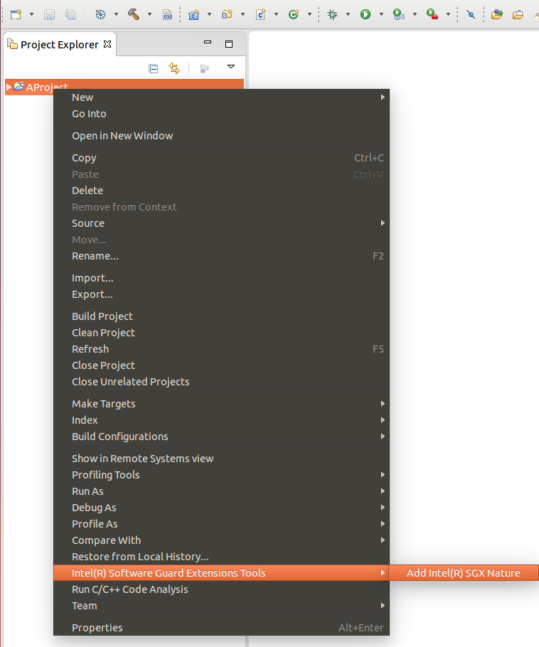
Add Intel(R) SGX Nature
After you add the Intel(R) SGX nature to your project, you should see:
A subdirectory sgx in the project which contains a Makefile file.
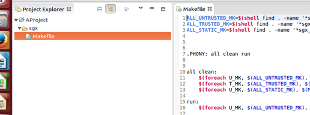
Makefile for Intel(R) SGX
The Intel(R) SGX tools as shown in the following graphic:
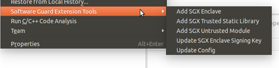
Intel(R) SGX Tools
New configurations specific to Intel(R) SGX technology. You may see the configurations for the project by clicking to the down arrow of button usually found at the top of the Eclipse window:
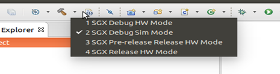
Configurations Specific to Intel(R) SGX Technology
You can create a new project with Intel(R) SGX nature. To create such a project, follow these steps:
Open a standard Eclipse new project: File menu → Project... . If you have installed Intel(R) Software Guard Extensions Eclipse Plug-in, you can see the category C/C++ with Intel(R) SGX Enabled in the New Project dialog.
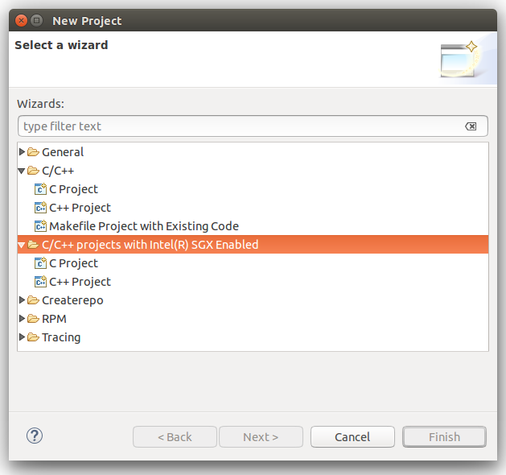
New Project
This category has 2 sub-categories, C project and C++ project. These sub-categories are similar to the sub-categories C Project and C++ Project of standard C/C++ category.
NOTE:
Projects created following the subcategories under C/C++ with Intel(R) SGX Enabled are identical with their standard counterparts, except that they have Intel(R) SGX Nature added. There is no difference between creating a C or C++ project with Intel(R) SGX enabled, or creating a standard C/C++ project and launch Add Intel(R) SGX nature from it, as described in precedent paragraph.
After you add the Intel(R) SGX nature to a project, you can start creating a minimal but complete skeleton for a new enclave:
Open the dialog Add New Intel(R) SGX Enclave by selecting Intel(R) Software Guard Extensions Tools → Add Intel(R) SGX Enclave from the contextual menu.
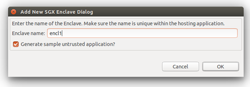
Add New Intel(R) SGX Enclave Dialog
Choose a name for the enclave in Enclave name field. This name is used in the process of generation of the skeleton to give unicity to the source files and the name of the resulting executable, so you can add more than one enclave to the same project.
If you do not select the Generate sample untrusted application checkbox, the plugin generates only a trusted file and a Makefile fragment to build and compile the trusted part. See the following graphic. All the code for the enclave, including build Makefile, is put in a directory <root>/sgx/enclave_<name> . C/C++ code for the enclave proper are in <root>/sgx/enclave_<name>/trusted.
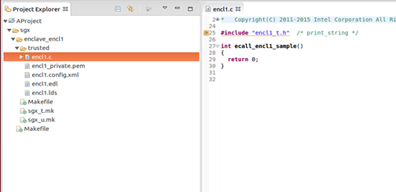
Generated Skeleton for an Enclave. The option to Generate Sample was not Used
If you select Generate sample untrusted application checkbox, a simple ready to work sample application is generated, including untrusted stubs and implementation for a sample OCALL and ECALL.
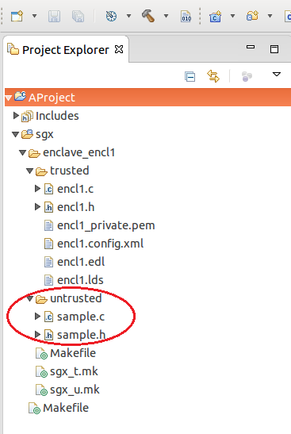
Generated Sample Untrusted Application
NOTE:
If you select the Generate sample untrusted application checkbox, ecalls from the untrusted part are not be resolved by Eclipse C/C++ indexer. These functions are marked with a red line. The declaration of these ecalls resides in the unstrusted stub header which is generated during the build process and is not indexed by Eclipse. To resolve this problem, right-click on project root and select Index → Freshen All Files.
Trusted Static Libraries helps enclave author have libraries of shared code to be reused by enclaves, in exactly the same manner as usual static libxxx.a libraries are used to share code between regular non-SGX applications. The plugin adds a command to generate the skeleton of a trusted shared library.
To add a new Intel(R) SGX Trusted Library:
Open Add New Intel(R) SGX Static Trusted Library dialog by right-click on the root of the project and select the appropriate command from Intel(R) Software Guard Extensions Tools menu:
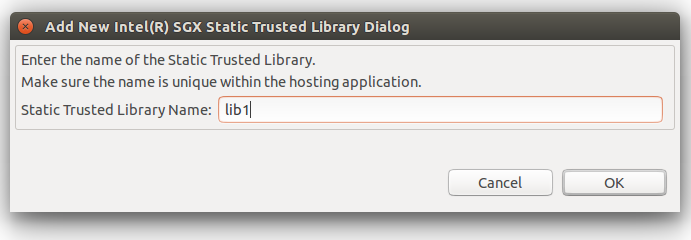
Add New Intel(R) SGX Static Trusted Library Dialog
Choose a name for the library and click OK. A skeleton for a trusted library is generated in directory <root>/sgx/trustedlib_<name>:
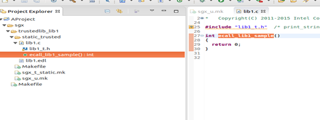
A Generated Trusted Library
Add an untrusted module to generate the untrusted stubs so you use an enclave, provided you have access to its .edl file. The enclave might have been built in the current project or in a different project.
To use trusted functionality of an enclave for which its *.edl is known, use the command Add Intel(R) SGX Untrusted Module:
Open dialog Add Intel(R) SGX Untrusted Module by right-click-ing the project root in Package Explorer and chose the command from Intel(R) Software Guard Extensions Tools.
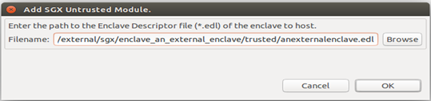
Add Intel(R) SGX Untrusted Module
Use the Browse button to navigate the file system using a file dialog, and click OK. The untrusted module is copied to <root>/sgx/untrusted_<edl file name>. The selected *.edl is copied to the project.
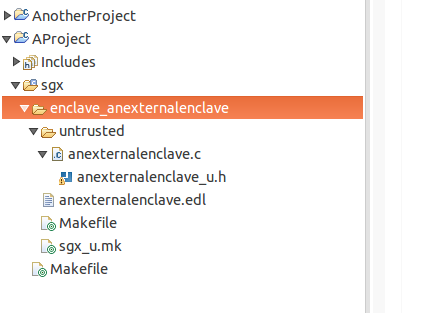
Copying the Untrusted Module to a Project
All skeletons enclave samples produced by the plugin contain a sample signing key. You might want to import another sign key that you already have, or generate a new one. Use the command Update Intel(R) SGX Enclave Signing Key to complete this task.
Click Import Key to update a selected signing key by copying another existing key or click Generate Key to update the selected signing key by generating a new key. In both cases, the new signature key is put into the file in text field Enclave Signing Key.
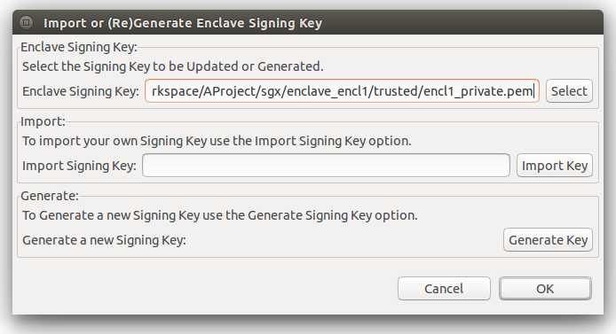
Import or (Re)Generate Enclave Signing Key
Under the hood, a new key is generated using openssl*, which needs to be installed on the machine:
openssl genrsa -out ../../../encl1_private.pem.key.pem -3 3072
A configuration file is an important part in the definition of an enclave. Intel(R) SGX SDK signer tool requires such *.xml configuration file as necessary input.
To update this configuration file, use the Update Config command:
Right-click on the root project, Intel(R) Software Guard Extensions Tools->Select Config File.
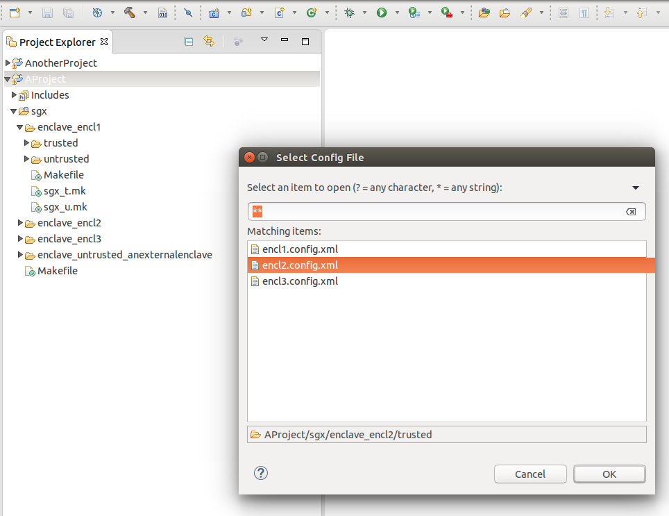
Select Configuration File
Click OK or double-click the selected configuration file to open the Enclave Configuration Settings dialog.
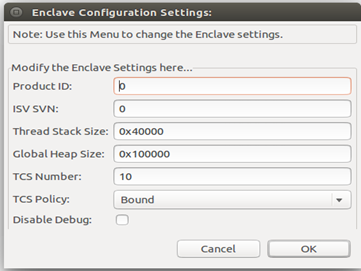
Enclave Configuration Settings
For details on the meaning of the fields, see Intel(R) Software Guard Extensions Developer Guide.
To help you develop enclaves, Intel(R) Software Guard Extensions Eclipse Plug-in generates all required structure including:
.edl file*.config.xml fileWhile these structure might be appropriate for development and debugging, you need a 2-step process to integrate your own signing schema for generating production enclaves.
.hex. This file is used with the external signing facility. You come back with a signature for the .hex file plus the public key of your signing facility, and proceed to Step 2.To complete this task, provide the following input parameters:
.hex file).hex file matches the unsigned enclave and the configuration file,If the parameters are consistent, the production signed enclave is produced.
NOTE:
If you generate signed enclave right after generating hash, you can only enter the parameters specific for generating signed enclave.
To use the two-step signing function, activate the configuration Intel(R) SGX Hardware Release mode. When this configuration is active, the compilation does not produce a signed enclave, as in the other Intel(R) SGX configurations; the process only produces unsigned enclaves.
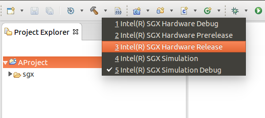
Configure Intel(R) SGX Hardware Release Mode
When you configure the plugin in the Intel(R) SGX Hardware Release Mode, you can see the Generate Hash and Generate Signed Enclave options through Intel(R) Software Guard Extensions Tools->Two Step Sign Enclave.
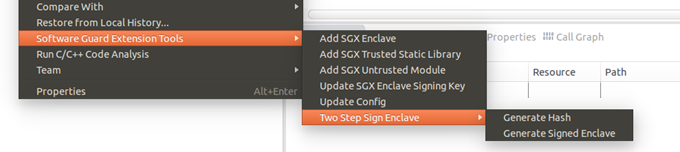
Two Step Sign Enclave Menu
Generating hash is the first step in the 2-Steps signing process.To generate hash, use the following steps:
Right-click on project root, go to Intel(R) Software Guard Extensions Tools menu → Two Step Enclave Sign → Generate Hash
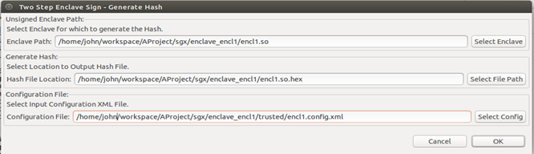
Two Step Enclave Sign - Generate Hash
.hex extension added. To change the path, click Select File Path to open a file dialog to select the file path.Click OK after you fill in all the fields. The Intel(R) SGX SDK is launched under the hood with the provided parameters and the hash file is generated. A dialog box appears to confirm the completion:
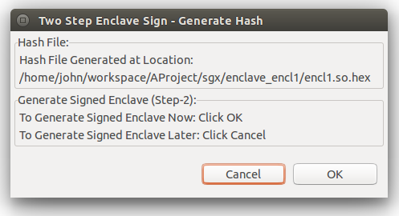
Generating Hash Completion Dialog
You complete the first step, generating hash, in the two step signing enclave. The *.hex file may be signed with the external facility, which generates a signature for it and a public verification key.
If you click OK, the Generate Signed Enclave dialog appears. The required fields in this dialog have been pre-configured with the paths of the unsigned enclave, the configuration file and of the *.hex file. To generated the final signed enclave ready for production immediately, click OK.
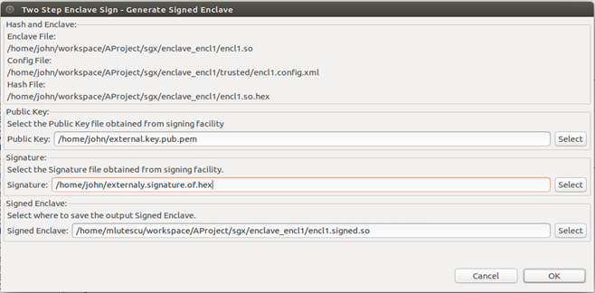
Generate Signed Enclave Dialog with Pre-configurations
If you click Cancel in the Generate Signed Enclave dialog, you can continue the signing process later using the Generate Signed Enclave command.
Generating signed enclave is the second step in the 2-Steps signing process. You should have the following files to complete this step:
.hex file generated with Generate Hash command.hex fileTo generate signed enclaves, use the following steps:
Right-click on the project root, and go to Intel(R) Software Guard Extensions Tools menu → Two Step Sign Enclave → Generate Signed Enclave.
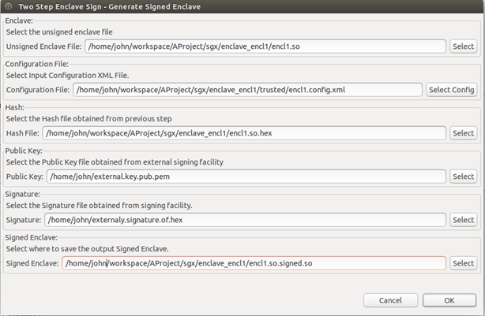
Generate Signed Enclave Dialog
This section describes the following topics about building and running Intel(R) SGX code:
There are usually two types of builds that a regular non-SGX project defines:
Intel(R) SGX-enabled projects add to this picture support to build and test Intel(R) SGX-enabled application on non-SGX platforms (or emulator) using simulation libraries. This approach doubles the set of build types, creating four possible combinations. For these combinations, you need to use different sets of compilation and linking flags and link different libraries.
The non-debug hardware build is meant to give production code, so it requires the maximum attention when signed. The Two Steps Sign schema is required for production enclaves, which involves an external signing facility, not part of Intel(R) SGX SDK. The other configurations are not meant for production but they have to be signed too. The simplest and more convenient Single Step schema is used for them.
Again for testing purpose, you might want to experiment with a non-production enclave built with release compilation and linking flags, on a real hardware Intel(R) SGX-enabled platform. That would be an enclave built exactly as a production enclave, except for the sign process which would be Single Step. To support the construction of such enclave, there is a hardware non-debug build configuration dubbed Prerelease.
So there are five Intel(R) SGX related configurations when Intel(R) SGX Nature is added to a project:
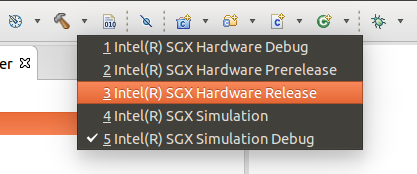
Intel(R) SGX Configurations
The following table resumes the existing Intel(R) SGX configurations and relate them with compilation/linking flags (debug/non-debug) and signing scheme (single vs. two steps):
Intel(R) SGX Configurations
| Configuration Name | Simulation? | Debug? | Signing Schema |
|---|---|---|---|
| Intel(R) SGX Hardware Debug | Hardware | Debug | Single Step |
| Intel(R) SGX Hardware Pre-release | Hardware | Non-debug | Single Step |
| Intel(R) SGX Hardware Release | Hardware | Non-debug | Two Step |
| Intel(R) SGX Simulation | Simulation | Non-debug | Single Step |
| Intel(R) SGX Simulation | Debug Simulation | Debug | Single step |
Intel(R) Software Guard Extensions Eclipse Plug-in uses standard GNU* make tool to build the trusted and the untrusted code, using the generated file sgx/Makefile.
This fact does not impose any restriction on the build tool chosen for the hosting project. Intel(R) Software Guard Extensions Eclipse* Plug-in uses its own build configurations which do not interfere with the configurations that you might have in your project.
When Intel(R) SGX configurations are selected, by default only code under <root>/sgx directory get built.
You can customize Intel(R) SGX configurations as any other Eclipse build configurations from the project properties dialog. For example:
Then you can customize and integrate Intel(R) SGX build process. You can use Makefile instead of sgx/Makefile in the example shown in the following figure:
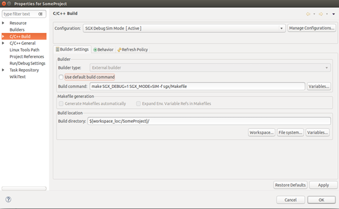
Customization of Intel(R) SGX Build Command
The build process is done using standard Eclipse interface for build, by example from the main Project menu:
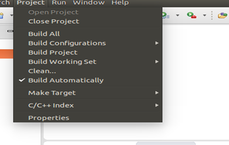
Project Menu
Intel(R) Software Guard Extensions Eclipse* Plugin provides an option to generate a sample application together with the enclave code when the enclave is created. After the project is build, the sample application is built also and ready to run. You can see the sample application named sample in the enclave directory in Project Explorer. You can run this sample as a local C/C++ application as shown in the following figure:
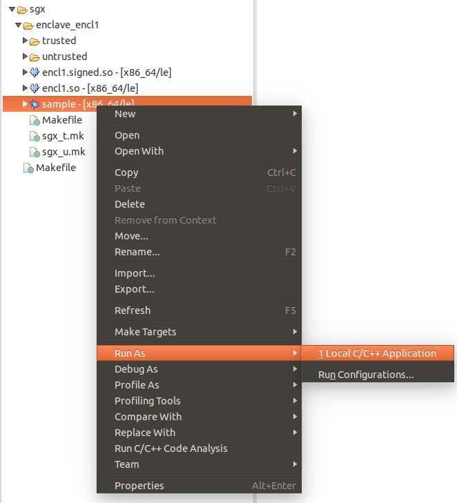
Sample Application
See the result of the execution in Eclipse console window as shown below:
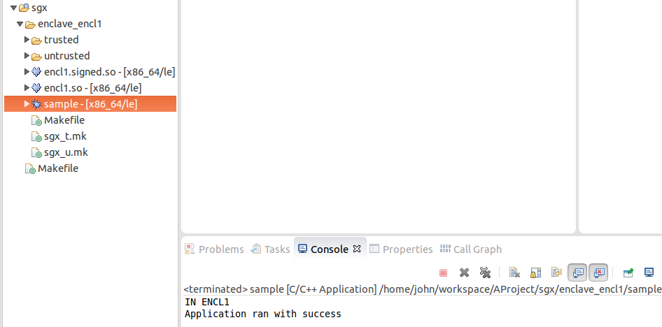
The Result of Running Samples Generated for Enclaves